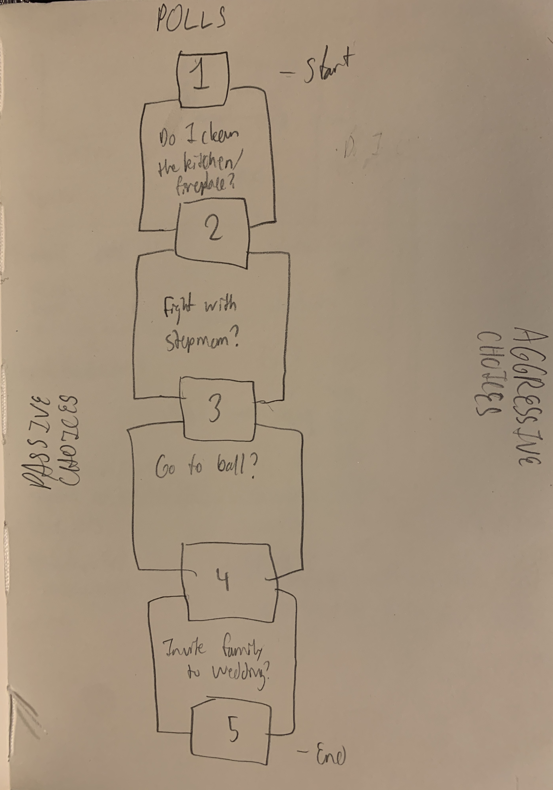
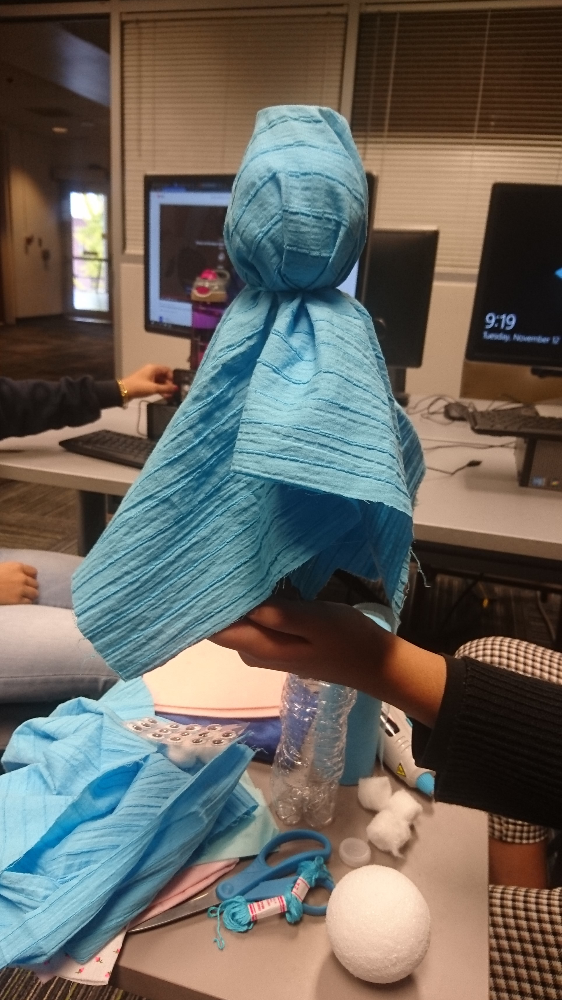
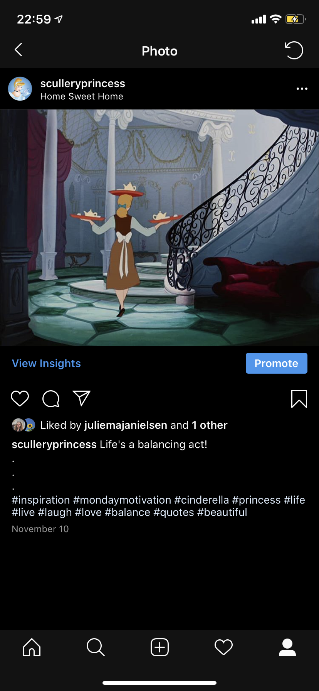
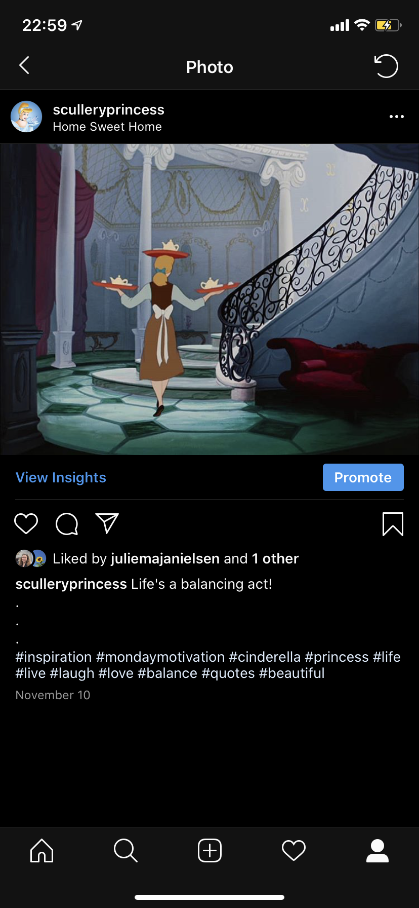
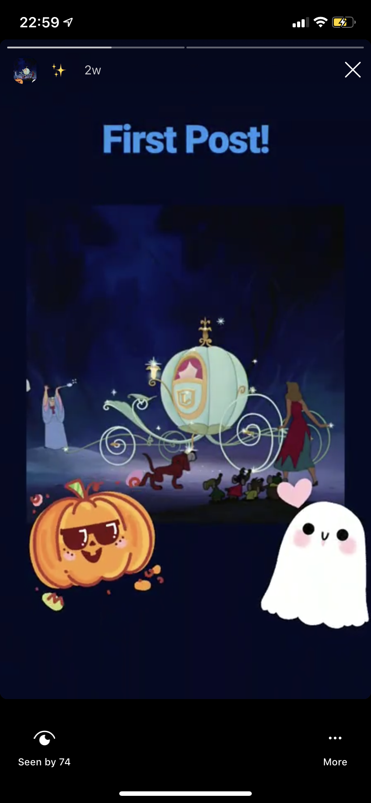
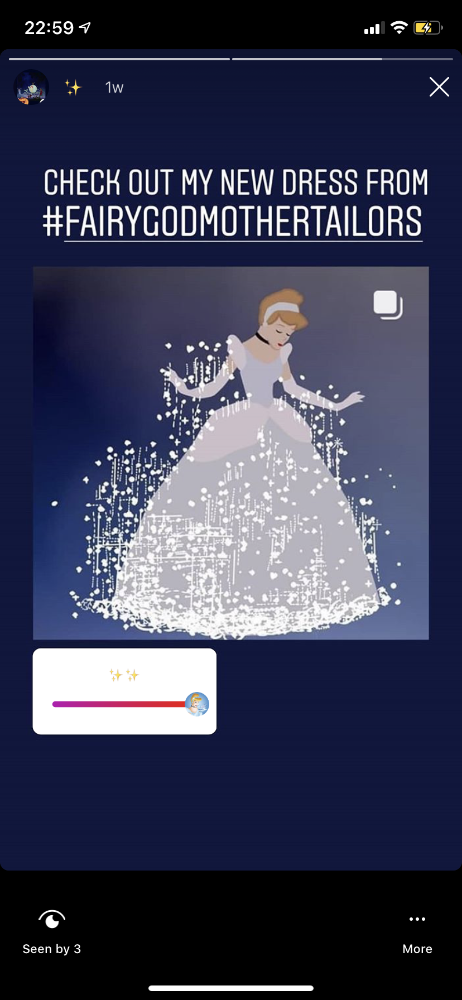
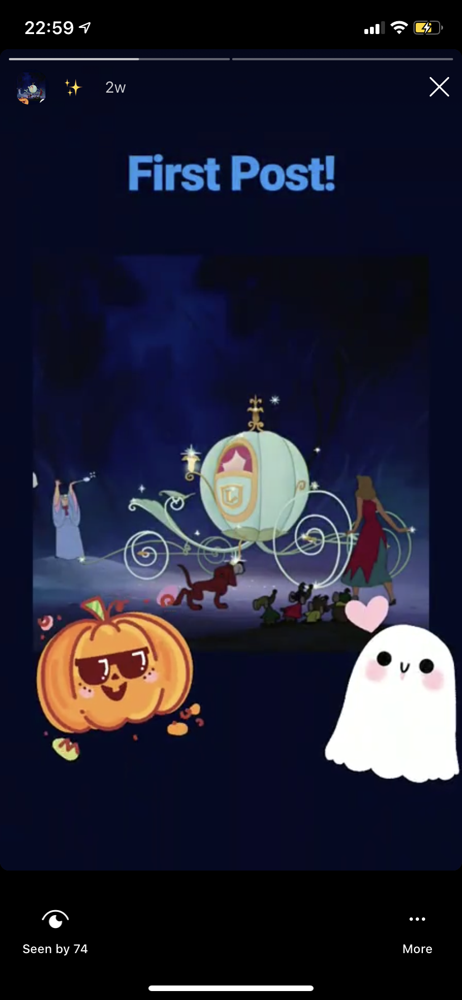
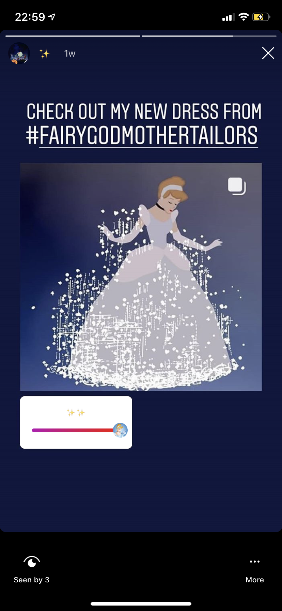
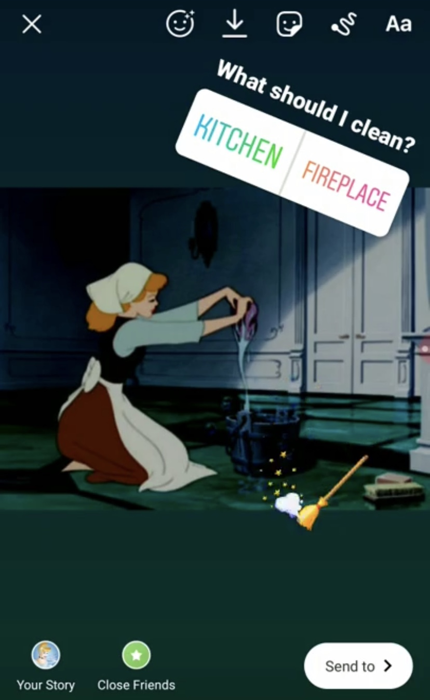
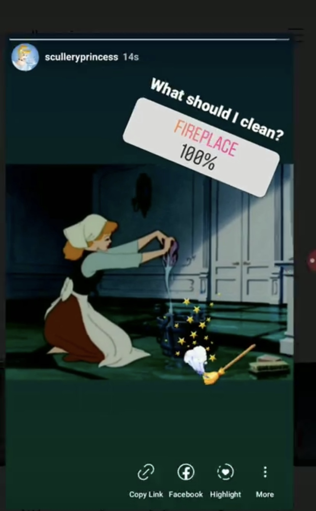

An example princess (Mulan) and an example choice
Example scene flow
Planning out what supplies to get


Constructing our Cinderella Prototype
More Cinderella Construction
 

 



Screenshots of the Instragram
 An example poll
Our way of creatively engaging with the design challenge